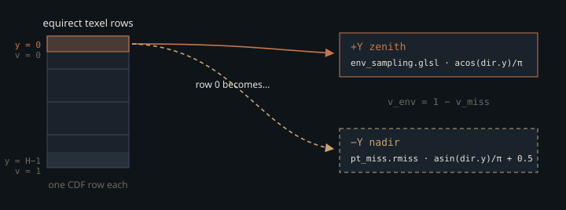

Monograph · Tree · ← Module hub · Environment CDF
sampling
Environment CDF
CPU build + GPU sampleEnvMap/pdfEnvMap.
The light you cannot sample uniformly
An HDR environment map is an area light with W×H emitters and several orders of magnitude between its brightest texel and its dimmest. Pick a direction uniformly on the sphere and the chance of landing on the solar disc is its solid angle over 4π: a half-degree sun subtends about 6×10⁻⁵ sr, so roughly five samples in a million. Every other sample returns sky-blue instead of sun, and the estimator converges like a lottery. The fix is the textbook one: tabulate a discrete 2D distribution over texels proportional to the light each carries, and invert it by binary search on the GPU.
OHAO builds that table on the CPU, once, from the float buffer `stbi_loadf` returned — after that buffer has already been memcpy'd into a staging buffer, copied into a `DEVICE_LOCAL` image and waited on. The build is the last read of the host copy before `stbi_image_free` drops it, not a step on the way to the upload:
envCDF.build(hdrPixels, ew, eh);ohao/gpu/vulkan/light_upload.cpp:439Out come a conditional CDF per row (W floats × H rows) and a marginal CDF over rows (H floats), handed to every RT profile with the map's width, height and unnormalised integral.
The sinθ that has to be there
The distribution is tabulated in texture coordinates, but the path tracer needs a density in solid angle. For the equirectangular parameterisation the shader uses — longitude φ = (u − ½)·2π, colatitude θ = vπ — the two measures differ by
so a density that is flat in (u,v) is *not* flat on the sphere: it crowds the poles, where a row of texels covers almost no solid angle. Converting, a target of p(ω) ∝ L(ω) requires the tabulated weight to be L·sinθ. That factor is exactly what the builder writes, with θ taken at the row centre, θ_y = π(y + ½)/H, and L the Rec.709 luminance of the texel:
float w = luminance(pixels[base], pixels[base + 1], pixels[base + 2]) * sinTheta;ohao/render/rt/env_cdf.cpp:30The payoff shows up on the GPU. Each row CDF is normalised by its own row sum S_y and the marginal by the grand total T, so the probability of a texel is the product of one step from each table, and the row sums cancel:
The sinθ inserted at build time is annihilated by the Jacobian at sample time, leaving a solid-angle density proportional to luminance alone. Note what is *absent* from that chain: T. Because both tables are already normalised, the shader never needs the integral — which is why `sampleEnvMap` accepts an `envIntegral` argument that its body never reads, even though all three raygen profiles dutifully pass `pc.tuning.z` into it.
void sampleEnvMap(float u1, float u2, uint W, uint H, float envIntegral,shaders/includes/rt/env_sampling.glsl:52Two binary searches per sample
Sampling is a `lower_bound` over the marginal to choose a row, then a second one over that row's conditional to choose a column:
if (envMarg.data[uint(mid)] < u) lo = mid + 1;shaders/includes/rt/env_sampling.glsl:21For a 4096×2048 HDRI that is 11 plus 12 dependent, warp-divergent SSBO loads to locate the texel, and `pt_raygen.rgen` takes one such sample at bounce 0 plus one per bounce of each of its specular and diffuse chains. The density is then reconstructed by differencing the two tables — four further loads, 27 per environment sample away from the tables' first entries — rather than read from a separate PDF image. The same CDF answers "which texel" and "how likely", so there is nothing to keep in sync:
float pdfUV = condDiff * margDiff * float(W) * float(H); // density in UV spaceshaders/includes/rt/env_sampling.glsl:69Dividing that by the Jacobian needs sinθ in the denominator, and it is clamped to 1e-4 first — bounding the PDF at the poles instead of letting it run away for a texel that subtends nothing.
The same file exports `pdfEnvMap`, which quantises an arbitrary direction back to the texel grid and differences the same two tables. The miss shader calls it and reports the result in the ray payload, so a BSDF-sampled ray that escapes into the sky can be MIS-weighted against the light strategy:
payload.envPdf = pdfEnvMap(dir, pc.control.w, uint(pc.tuning.y));shaders/rt/pt_miss.rmiss:78The two are not the same function of ω, and that matters for the balance heuristic, which only sums to one if both strategies evaluate the *same* density for a given direction. `sampleEnvMap` takes sinθ from the centre of the row it just chose; `pdfEnvMap` takes it from the direction it was handed. The CDF steps are shared, the Jacobian is not: the sampler's sinθ is a step function of the row, `pdfEnvMap`'s varies continuously within it.
float theta = (float(y) + 0.5) / float(H) * OHAO_PI;shaders/includes/rt/env_sampling.glsl:61On the directions the sampler itself emits the two agree, because those directions *are* row centres. For a BSDF-sampled direction they differ by sinθ_y/sinθ(ω), which is within a texel's worth of 1 across most of the sphere and worst at the poles, where sinθ varies fastest across a row: for a direction inside 1e-4 rad of the pole `pdfEnvMap`'s denominator bottoms out at the clamp while `sampleEnvMap` uses sinθ₀ ≈ 7.7e-4 for that same top row of a 2048-high map — a factor of 7.7 between the two sides of one weight.
The flip between the sampler and the sky
`sampleEnvMap` returns a direction, never a radiance. The raygen fires an occlusion ray along it and takes whatever colour the miss shader hands back:
vec3 envContribution = envRadiance * brdf * NdotL_env * w / envPdf;shaders/rt/pt_raygen.rgen:481That leaves two functions responsible for one texel↔direction map: `equirectPixelToDir`/`pdfEnvMap` in `env_sampling.glsl`, and `dirToEquirect` in `pt_miss.rmiss`. They agree on longitude. On latitude one uses arccosine of the up axis, the other arcsine:
float theta = acos(clamp(dir.y, -1.0, 1.0)); // [0, pi]shaders/includes/rt/env_sampling.glsl:79float theta = asin(clamp(dir.y, -1.0, 1.0)); // [-pi/2, pi/2]shaders/rt/pt_miss.rmiss:54Since acos(y)/π = ½ − asin(y)/π, the two v coordinates satisfy v_env = 1 − v_miss: they are vertical mirrors. The importance sampler finds a bright texel in row y and emits the direction whose radiance the miss shader then fetches from row H−1−y. For any environment that is not symmetric about the horizon — which is every real capture — the CDF steers samples at the mirror image of the bright region.

Both conventions ship, and the sampler's is the minority one. `pt_miss.rmiss`, `deferred_lighting.frag` (twice — the reflection lookup and the irradiance lookup) and `equirect_to_cubemap.comp` all write v as asin(y)/π + ½:
vec2 envUV = vec2(phi / 6.2831853 + 0.5, theta / 3.1415926 + 0.5);shaders/core/deferred_lighting.frag:277vec2 uv = vec2(phi / (2.0 * PI) + 0.5, theta / PI + 0.5);shaders/compute/equirect_to_cubemap.comp:38Only `cinematic_composite.comp` lands on the sampler's side, and it gets there from an `asin` as well: its θ is arcsine, and `0.5 - theta / PI` is algebraically acos(y)/π. So the split is real rather than one stray function — but it is three files to two, against the sampler:
vec2 uv = vec2(phi / (2.0 * PI) + 0.5, 0.5 - theta / PI);shaders/rt/cinematic_composite.comp:60Nothing in the build catches it. The sinθ weight is flip-invariant (sin θ = sin(π − θ)), so the integral is unchanged, and the unit tests only assert that the CDFs are monotone, normalised, and concentrate around a hot texel — all true of a mirrored table:
TEST(EnvCDF, HotSpotConcentratesCDF) {tests/renderer/env_cdf_test.cpp:41The flip costs variance, not correctness: radiance always comes from the traced ray, never from the PDF, and MIS covers the gap — where the environment PDF is small or zero the balance weight on the BSDF strategy goes to one, and the raygen defaults that weight to 1.0 outright when `payload.envPdf` is zero. The sun is still found — by BSDF sampling, at BSDF-sampling variance, which is exactly the cost the CDF exists to avoid paying. What the flip does not excuse is that env-IS is not an unbiased estimator to begin with. `sampleEnvMap` returns `equirectPixelToDir(x, y, W, H)` unmodified — the exact texel centre, with no intra-texel jitter — so the strategy draws from W·H fixed directions and the expectation of its NEE term is a texel-by-texel midpoint quadrature of L·f·cosθ·w rather than the integral. That error is set by the map's resolution and does not shrink with spp.
if (payload.envPdf > 0.0 && pc.control.w > 0u && !specLastBounceWasDelta) {shaders/rt/pt_raygen.rgen:560dir = equirectPixelToDir(x, y, W, H);shaders/includes/rt/env_sampling.glsl:58The same env-NEE block carries a second biasing operation, in all three raygen profiles, gated on the `PT_FLAG_ENABLE_FIREFLY_CLAMP` bit of `control.x`: `envContribution` and its diffuse and specular AOV splits are each scaled down to the `pc.tuning.x` luminance ceiling. `kOfflineRTSettings` clears that bit; `kRealtimeRTSettings` sets it.
float lumD = dot(envDiffuse, vec3(0.2126, 0.7152, 0.0722));shaders/rt/pt_raygen.rgen:490.enableFireflyClamp = true,ohao/render/rt/rt_settings.hpp:44What happens with no environment map
Bindings 17 and 18 are declared unconditionally in the RT descriptor layout, for raygen and miss stages both, and both shaders reference them statically — so something must be bound there in every scene, including a Cornell box with no HDRI at all.
// 17: Env marginal CDF (storage buffer) — accessed by raygen + missohao/render/rt/path_tracer_descriptors.cpp:117Rather than compile a second pipeline (or specialise the raygen) for the no-env case, the upload path binds a one-float dummy and signals "no environment" out-of-band through push constants: width, height and integral all go out as zero, and the shaders gate every env-IS block on `pc.control.w > 0u`. One pipeline, one layout, two four-byte allocations — against the alternative of doubling the shader permutation count to save eight bytes.
float v = 1.0f; memcpy(dp, &v, sizeof(float));ohao/gpu/vulkan/light_upload.cpp:534// control.w = envCDFWidth. If 0, shader must skip env importance sampling.ohao/render/rt/path_tracer.hpp:471The builder has a second degenerate case. A completely black row sums to zero, so its conditional CDF would be all zeros; the builder fills it with a uniform ramp instead:
// Degenerate black row — fall back to uniformohao/render/rt/env_cdf.cpp:40In a map with any light in it that ramp is unreachable. `searchMarginal` returns the lowest row whose marginal entry reaches u, and a zero-sum row's entry is the same running total over the same grand total as its predecessor's — identical bits — so for any u > 0 the search resolves to the earlier row and never lands on the black one.
It earns its keep in exactly one case: a map whose *every* row is black. The marginal then falls back to a uniform ramp too, every row becomes reachable, and the two ramps compose into uniform sampling in (u,v) with `pdfUV` of exactly 1 — which, over the 2π²sinθ Jacobian, is the correctly normalised solid-angle density for that sampling. Without the row fallback that case would instead walk `searchConditional` to column W−1 with a `condDiff` of zero, and the caller's `envPdf > 0.0` guard would reject every env sample.
Where the tables live, and what leaks
The HDR image is staged through a transfer buffer into `DEVICE_LOCAL` memory. The CDFs are not: they are allocated `HOST_VISIBLE | HOST_COHERENT`, mapped, memcpy'd, and left there for the GPU to binary-search in place.
void* dp; vkMapMemory(m_device, outMem, 0, sz, 0, &dp);ohao/gpu/vulkan/light_upload.cpp:458For a 4096×2048 map the conditional table alone is 8.4 M floats — 32 MiB — of randomly-accessed data on a heap whose residency depends on which memory type the driver reports first for those flags.
The buffers are destroyed only in `VulkanRenderer::shutdown`. The branch that builds them fires whenever the requested env path differs from the loaded one, and it overwrites `m_envMarginalCDFBuffer` / `m_envConditionalCDFBuffer` without destroying the previous pair — so switching HDRIs at runtime leaks both tables and the env image behind them. Loading one environment and keeping it, which is what every shipped example does, never hits this.
Contracts
- Bindings 17/18 are re-written from `m_envMarginalCDFBuffer` / `m_envConditionalCDFBuffer` on every `PathTracer::render`, so a stale handle cannot survive a frame — but the write is *skipped* when the handle is null, and raygen and miss reference those bindings statically. A scene that reaches its first render without `setEnvCDFBuffers` ever having run would dispatch against two descriptors that were never written. The dummy pair `light_upload` allocates is what makes that unreachable.
- Width, height and integral travel in push constants (`control.w`, `tuning.y`, `tuning.z`), not in the buffers. A `control.w` of 0 means "skip env importance sampling entirely", not "the map is 0 wide".
- `sampleEnvMap` and `pdfEnvMap` share the two CDF tables and the acos latitude convention, but take sinθ from different places — the chosen row's centre and the queried direction. They agree on the directions the sampler emits and diverge elsewhere, worst at the poles, so the balance weights do not sum to exactly one for BSDF-sampled directions. Neither matches `dirToEquirect` in `pt_miss.rmiss`, and *that* mismatch costs variance, not correctness.
- The CDF is rebuilt only when the environment *path* changes, so `envIntensity` relighting never touches it — correctly, since a uniform scale leaves the normalised distribution identical.
Source files
ohao/gpu/vulkan/light_upload.cppohao/render/rt/env_cdf.cppshaders/includes/rt/env_sampling.glslshaders/rt/pt_miss.rmissshaders/rt/pt_raygen.rgenshaders/core/deferred_lighting.fragshaders/compute/equirect_to_cubemap.compshaders/rt/cinematic_composite.comptests/renderer/env_cdf_test.cppohao/render/rt/rt_settings.hppohao/render/rt/path_tracer_descriptors.cppohao/render/rt/path_tracer.hppohao/render/rt/env_cdf.hppParent hub for the full pipeline narrative; this page is the file-level design unit. Sitemap · hover glossary terms anywhere.